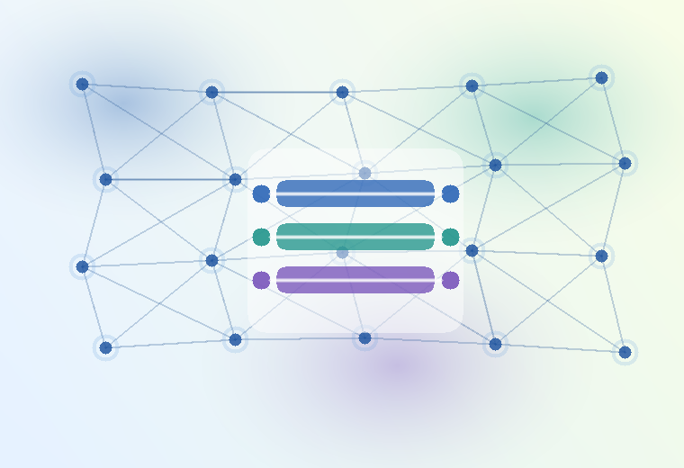

PQC-101
Post-Quantum Cryptography Essentials
Threat model, standards, algorithm families, migration roadmap, risk triage, algorithm picker, glossary, and quiz. This is the live first course.
A practical self-study path for post-quantum cryptography, from absolute beginner concepts to standards, migration planning, protocol design, and operational readiness.

Threat model, standards, algorithm families, migration roadmap, risk triage, algorithm picker, glossary, and quiz. This is the live first course.
Upcoming: TLS, VPN, SSH, PKI, certificates, code signing, and hybrid classical-plus-PQC rollout patterns.
Upcoming: side-channel risk, key/ciphertext sizes, HSM/KMS impact, performance testing, library selection, and validation readiness.
Upcoming: cryptographic inventory, CBOM, procurement language, dependency mapping, change windows, governance, and audit evidence.
Upcoming: lattice/code/hash-based assumptions, FN-DSA and HQC status, additional signature candidates, formal verification, and standards tracking.
Start with PQC-101 if you are new to quantum-safe security. Use the risk triage tool to decide what systems need attention first, then use the roadmap cards to pick deeper modules as they are added.